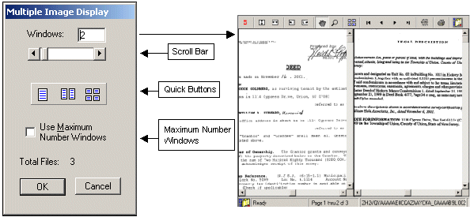

| Document Viewer Users Guide |
| |
| Quick View Multiple Image Display Selection Screen |
|
This dialog box is used to select up to 25 viewing windows for displaying images.
|
|

|
| Scroll Bar: |
Used to select the number of windows to open to view selected images. |
| Quick Buttons: |
Used to select 1 of 3 settings, single screen (1), split screen (2) or quad view (4). |
| Use Maximum Number Windows: |
When selected, the viewer will automatically open the required number of windows
necessary to display all the pages of the document, up to a maximum of 25 pages.
|
|
|
When multiple images are viewed,
the user can click once on the desired screen to make it active.
When a window is active the applicable Button Bar functions:
rotate, zoom, pan, etc. are available for the user in the selected window.
|
|
Back to Users Guide Main Page |
Close This Window
|